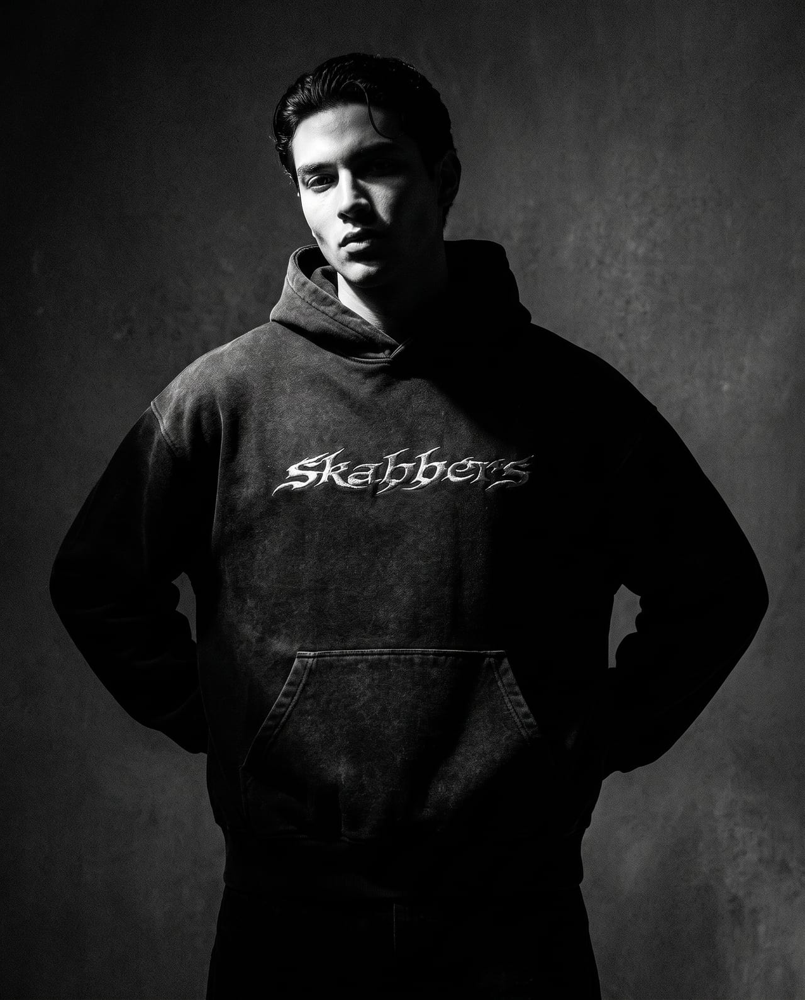

La precisión no es un estilo,
es el método.
Cada prenda se diseña como se diseña un sistema: con reglas claras y cero desperdicio.

El método
Patrones ajustados al gramo, costuras calculadas y acabados hechos a mano. Antes de producir una prenda probamos cada proporción sobre cuerpo real: el resultado son piezas oversized que caen exactamente donde deben, no donde el molde permite.
Los materiales
Trabajamos con telas pesadas — jersey de 240 gramos, algodón de 420, denim de 14 onzas — porque la caída de una prenda es una consecuencia de su peso. Nada de rellenos ni terminaciones que se noten a la tercera lavada.
Las series
Producimos en ediciones cortas y sin reposición. Cuando una serie se agota, se agota. Eso nos obliga a acertar en la primera y nos permite cambiar de dirección sin arrastrar stock.
Dónde estamos
Diseñamos y producimos en Argentina. Enviamos a todo el país.